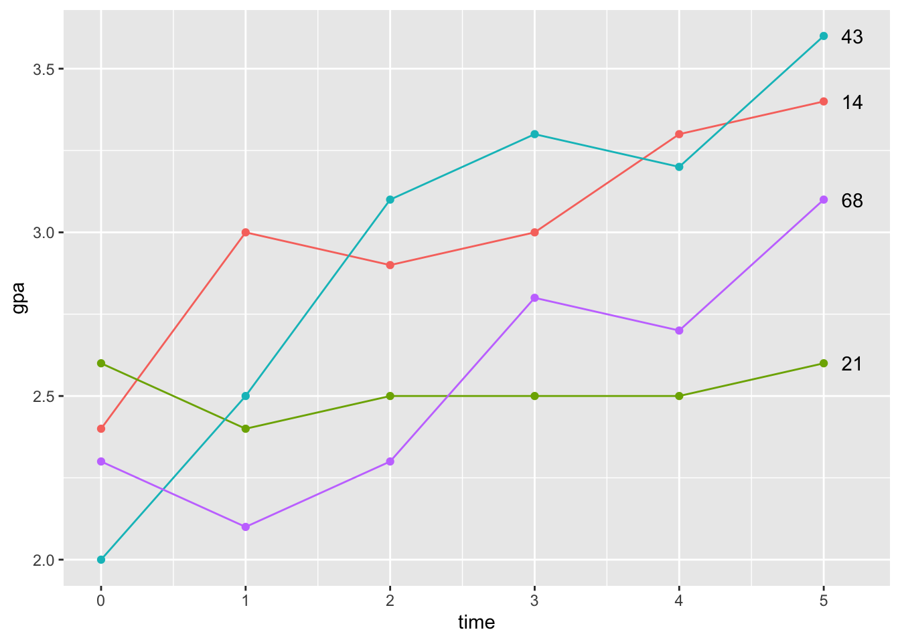

Lösungen
Datenaufbereitung
- Laden sie die Pakete
tidyverse,nlme,knitrundbroom.mixedmit dem Befehllibrary().
# Sammlung von Paketen, viel zu Datenmanipulation
library("tidyverse")
# Für die Berechnung der Multilevel Modelle
library("nlme")
# Für die Weiterverarbeitung der Ergebnisse des Pakets nlme
library("broom.mixed")
# Wird einmal für die Darstellung einer Tabelle benötigt
library("kableExtra")- Laden Sie die Datendatei
gpa2.csvmit dem Befehlread_csv2(). Speichern Sie die Daten in einem neuen Objekt unter dem Namengpa_data. Betrachten Sie die Daten in dem Objektgpa_datanäher. Benutzen Sie hierzu die Befehlehead()undstr().
gpa_data <- read.csv2(file = "./data/gpa2.csv")
head(gpa_data)## student sex highgpa gpa1 gpa2 gpa3 gpa4 gpa5 gpa6
## 1 1 1 2.8 2.3 2.1 3.0 3.0 3.0 3.3
## 2 2 0 2.5 2.2 2.5 2.6 2.6 3.0 2.8
## 3 3 1 2.5 2.4 2.9 3.0 2.8 3.3 3.4
## 4 4 0 3.8 2.5 2.7 2.4 2.7 2.9 2.7
## 5 5 0 3.1 2.8 2.8 2.8 3.0 2.9 3.1
## 6 6 1 2.9 2.5 2.4 2.4 2.3 2.7 2.8
## job1 job2 job3 job4 job5 job6 admitted
## 1 2 2 2 2 2 2 1
## 2 2 3 2 2 2 2 0
## 3 2 2 2 3 2 2 1
## 4 3 2 2 2 2 2 0
## 5 2 2 2 2 2 2 1
## 6 2 3 3 2 3 3 0str(gpa_data)## 'data.frame': 200 obs. of 16 variables:
## $ student : int 1 2 3 4 5 6 7 8 9 10 ...
## $ sex : int 1 0 1 0 0 1 0 1 0 0 ...
## $ highgpa : num 2.8 2.5 2.5 3.8 3.1 2.9 2.3 3.9 2 2.8 ...
## $ gpa1 : num 2.3 2.2 2.4 2.5 2.8 2.5 2.4 2.8 2.8 2.8 ...
## $ gpa2 : num 2.1 2.5 2.9 2.7 2.8 2.4 2.4 2.8 2.7 2.8 ...
## $ gpa3 : num 3 2.6 3 2.4 2.8 2.4 2.8 3.1 2.7 3 ...
## $ gpa4 : num 3 2.6 2.8 2.7 3 2.3 2.6 3.3 3.1 2.7 ...
## $ gpa5 : num 3 3 3.3 2.9 2.9 2.7 3 3.3 3.1 3 ...
## $ gpa6 : num 3.3 2.8 3.4 2.7 3.1 2.8 3 3.4 3.5 3 ...
## $ job1 : int 2 2 2 3 2 2 3 2 2 2 ...
## $ job2 : int 2 3 2 2 2 3 2 2 2 2 ...
## $ job3 : int 2 2 2 2 2 3 3 2 3 2 ...
## $ job4 : int 2 2 3 2 2 2 2 2 2 3 ...
## $ job5 : int 2 2 2 2 2 3 2 2 2 2 ...
## $ job6 : int 2 2 2 2 2 3 2 2 2 2 ...
## $ admitted: int 1 0 1 0 1 0 1 1 9 1 ...- Wählen Sie mit dem Befehl
select()die für die Analyse relevanten Datenstudent,sexundgpa1bisgpa6aus. Im Anschluss benennen Sie mit dem Befehlrename()den Variablennamenstudentinstudent_idum. Betrachten Sie die Ergebnisse der Datenmanipulation.
gpa_data <- select(gpa_data, student, sex, starts_with("gpa"))
gpa_data <- rename(gpa_data, student_id = student)
head(gpa_data)## student_id sex gpa1 gpa2 gpa3 gpa4 gpa5 gpa6
## 1 1 1 2.3 2.1 3.0 3.0 3.0 3.3
## 2 2 0 2.2 2.5 2.6 2.6 3.0 2.8
## 3 3 1 2.4 2.9 3.0 2.8 3.3 3.4
## 4 4 0 2.5 2.7 2.4 2.7 2.9 2.7
## 5 5 0 2.8 2.8 2.8 3.0 2.9 3.1
## 6 6 1 2.5 2.4 2.4 2.3 2.7 2.8- Strukturieren Sie die Daten mit dem Befehl
pivot_longer()um. Überführen Sie dabei die Variablengpa1bisgpa6von dem Wide-Format in das Long-Format. Die neu entstehende Spalte mit den GPA-Werten für alle Messzeitpunkte soll dabei den Variablennamengpaerhalten und die Namen der Variablengpa1bisgpa6sollen in eine Spalte mit dem Namentimeüberführt werden. Betrachten Sie die Ergebnisse der Umstrukturierung.
gpa_data_long <- pivot_longer(gpa_data,
cols = c("gpa1", "gpa2", "gpa3", "gpa4", "gpa5", "gpa6"),
names_to = "time",
values_to = "gpa")
gpa_data_long## # A tibble: 1,200 × 4
## student_id sex time gpa
## <int> <int> <chr> <dbl>
## 1 1 1 gpa1 2.3
## 2 1 1 gpa2 2.1
## 3 1 1 gpa3 3
## 4 1 1 gpa4 3
## 5 1 1 gpa5 3
## 6 1 1 gpa6 3.3
## 7 2 0 gpa1 2.2
## 8 2 0 gpa2 2.5
## 9 2 0 gpa3 2.6
## 10 2 0 gpa4 2.6
## # … with 1,190 more rows- Im Folgenden wird die Variable
timeüberschrieben und eine neue Zeitvariable mit den Werten 0 bis 5 gebildet. Überprüfen Sie mit der Funktionprint(), ob die Werte korrekt erstellt wurden. Wie beurteilen Sie, dass der erste Messzeitpunkt den Wert 0 erhalten hat?
gpa_data_long <- gpa_data_long%>%
group_by(student_id)%>%
mutate(time = 1:n()-1)
print(gpa_data_long, n = 15)## # A tibble: 1,200 × 4
## # Groups: student_id [200]
## student_id sex time gpa
## <int> <int> <dbl> <dbl>
## 1 1 1 0 2.3
## 2 1 1 1 2.1
## 3 1 1 2 3
## 4 1 1 3 3
## 5 1 1 4 3
## 6 1 1 5 3.3
## 7 2 0 0 2.2
## 8 2 0 1 2.5
## 9 2 0 2 2.6
## 10 2 0 3 2.6
## 11 2 0 4 3
## 12 2 0 5 2.8
## 13 3 1 0 2.4
## 14 3 1 1 2.9
## 15 3 1 2 3
## # … with 1,185 more rows- Das Objekt
gpa_subsampleenthält die Messwerte von vier Personen (IDs 14, 21, 43, 68). Im Folgenden soll für diese Personen der Verlauf der GPA-Werte über die Zeit dargestellt werden. Dabei werden verschiedene Funktionen des Paketsggplot2benutzt. Hierzu müssen zunächst in der Funktionggplot()die Variablentimeundgpaals x- bzw. y-Wert angegeben werden. Damit die GPA-Werte einer Person eindeutig zugeordnet werden können, muss für das Argumentgroupzusätzlich die Variablestudent_idangegeben werden. Betrachten Sie die Ergebnisse der im Objektgraph_casesabgespeicherten Graphik.
gpa_subsample <- gpa_data_long%>%
filter(student_id %in% c(14, 21, 43, 68))
gpa_subsample## # A tibble: 24 × 4
## # Groups: student_id [4]
## student_id sex time gpa
## <int> <int> <dbl> <dbl>
## 1 14 1 0 2.4
## 2 14 1 1 3
## 3 14 1 2 2.9
## 4 14 1 3 3
## 5 14 1 4 3.3
## 6 14 1 5 3.4
## 7 21 1 0 2.6
## 8 21 1 1 2.4
## 9 21 1 2 2.5
## 10 21 1 3 2.5
## # … with 14 more rowsgraph_cases <- ggplot(gpa_subsample, aes(x = time, y = gpa, group = student_id)) +
# Angabe, dass die Werte als Linien dargestellt werden sollen
geom_line(aes(color = as.factor(student_id))) +
# Die Werte der Personen sollen zusätzlich als Punkte dargestellt werden
geom_point(aes(color = as.factor(student_id))) +
# Die Gerade sollen mit der ID beschriftet werden
geom_text(data = filter(gpa_subsample, time == last(time)),
aes(label = as.factor(student_id)),
position = position_nudge(x = 0.2),
check_overlap = TRUE) +
theme(legend.position = "none")
graph_cases
Multilevel Modeling
- Berechnen Sie das Random-Intercept, Random-Slope Modell mit der Funktion
lme()aus dem Paketlmer. Die Funktion benötigt die Daten dabei im Longformat, die in dem Objektgpa_data_longgespeichert sind. Als Variablen müssen dabei die Variablegpaals Ergebnisvariable und die Variabletimeals Prädiktorvariable angegeben werden. Betrachten Sie die Ergebnisse anschließend mit der Funktionsummary(). Welche festen Effekte sind signfikant? Können Sie beurteilen, ob die zufälligen Effekte signifikant sind?
mod1 <- lme(gpa ~ time, random = ~ 1 + time | student_id, data = gpa_data_long)
summary(mod1)## Linear mixed-effects model fit by REML
## Data: gpa_data_long
## AIC BIC logLik
## 272.9566 303.487 -130.4783
##
## Random effects:
## Formula: ~1 + time | student_id
## Structure: General positive-definite, Log-Cholesky parametrization
## StdDev Corr
## (Intercept) 0.21259026 (Intr)
## time 0.06711178 -0.098
## Residual 0.20588283
##
## Fixed effects: gpa ~ time
## Value Std.Error DF t-value
## (Intercept) 2.5992143 0.018357249 999 141.59062
## time 0.1063143 0.005884789 999 18.06595
## p-value
## (Intercept) 0
## time 0
## Correlation:
## (Intr)
## time -0.345
##
## Standardized Within-Group Residuals:
## Min Q1 Med Q3
## -3.26951121 -0.53771385 -0.01277499 0.53258654
## Max
## 3.19388035
##
## Number of Observations: 1200
## Number of Groups: 200- Das Objekt
mod1enthält die Ergebnisse des Random-Intercept, Random-Slope Modells. Wenden Sie auf das Objektmod1die Funktiontidy()aus dem Paketbroom.mixedan. In der Funktion setzen Sie dabei den Wert des Argumentsconf.intaufTRUEund geben für das Argumentconf.levelden Wert0.95an. Dadurch werden die Konfidenzintervalle der Parameter geschätzt und die Signifikanz der zufälligen Effekte kann nun zusätzlich beurteilt werden.
mod1_coef <- tidy(mod1, conf.int = TRUE, conf.level = 0.95)
kbl(mod1_coef, digits = 2) %>%
kable_styling(bootstrap_options = "striped")| effect | group | term | estimate | std.error | df | statistic | p.value | conf.low | conf.high |
|---|---|---|---|---|---|---|---|---|---|
| fixed | fixed | (Intercept) | 2.60 | 0.02 | 999 | 141.59 | 0 | 2.56 | 2.64 |
| fixed | fixed | time | 0.11 | 0.01 | 999 | 18.07 | 0 | 0.09 | 0.12 |
| ran_pars | student_id | sd_(Intercept) | 0.21 | 0.18 | 0.25 | ||||
| ran_pars | student_id | cor_time.(Intercept) | -0.10 | -0.29 | 0.10 | ||||
| ran_pars | student_id | sd_time | 0.07 | 0.06 | 0.08 | ||||
| ran_pars | Residual | sd_Observation | 0.21 |
- Die Objekte
fix_interceptundfix_slopeenthalten die festen Effekte vom Random-Intercept, Random-Slope Modell aus dem Objektmod1. Erweitern Sie die erste Graphik im Objektgraph_casesund stellen Sie zusätzlich die Gerade dar, die über die festen Effekte geschätzt wird. Für die Erweiterung nehmen Sie die Funktiongeom_abline()aus dem Paketggplot2. Betrachten Sie im Anschluss die Ergebnisse der neuen Graphik. Entspricht die Graphik Ihren Erwartungen?
fix_intercept <- summary(mod1)$coef$fixed[[1]]
fix_slope <- summary(mod1)$coef$fixed[[2]]
graph_fixed <- graph_cases +
geom_abline(intercept = fix_intercept, slope = fix_slope)
graph_fixed- In dem Objekt
mod1sind die Ergebnisse des Random-Intercept, Random-Slope Modell gespeichert. Wenden Sie die Funktionaugment()aus dem Paketbroom.mixedauf das Objekt an. Betrachten Sie im Anschluss die von der Funktion ausgegebenen Werte und versuchen ihre Bedeutung zu erfassen. Bei der Variable.fittedhandelt es sich um individuell vorhergesagten Werte der Personen. Um die Bedeutung dieser Werte noch besser zu verstehen, sollen sie in der nächsten Übung graphisch dargestellt werden.
mod1_data <- augment(mod1)
mod1_data## # A tibble: 1,200 × 7
## student_id sex time gpa .fitted .resid
## <int> <int> <dbl> <dbl> <dbl> <dbl>
## 1 1 1 0 2.3 2.40 -0.0970
## 2 1 1 1 2.1 2.56 -0.463
## 3 1 1 2 3 2.73 0.271
## 4 1 1 3 3 2.90 0.105
## 5 1 1 4 3 3.06 -0.0615
## 6 1 1 5 3.3 3.23 0.0724
## 7 2 0 0 2.2 2.39 -0.189
## 8 2 0 1 2.5 2.49 0.00680
## 9 2 0 2 2.6 2.60 0.00228
## 10 2 0 3 2.6 2.70 -0.102
## # … with 1,190 more rows, and 1 more variable:
## # .fixed <dbl>- Das Objekt
mod1_subsampleenthält die Daten der Substichprobe, die über dieaugment-Funktion gewonnen wurde. Erweitern Sie die zweite Graphikgraph_fixed, um die individuell geschätzten Geradengleichungen. Hierzu müssen in der Funktiongeom_lineals x- und als y-Wert die Variablentimeundfittedangegeben werden.
mod1_subsample <- filter(mod1_data, student_id %in% c(14, 21, 43, 68))
mod1_subsample## # A tibble: 24 × 7
## student_id sex time gpa .fitted .resid
## <int> <int> <dbl> <dbl> <dbl> <dbl>
## 1 14 1 0 2.4 2.62 -0.217
## 2 14 1 1 3 2.77 0.232
## 3 14 1 2 2.9 2.92 -0.0194
## 4 14 1 3 3 3.07 -0.0705
## 5 14 1 4 3.3 3.22 0.0784
## 6 14 1 5 3.4 3.37 0.0272
## 7 21 1 0 2.6 2.47 0.135
## 8 21 1 1 2.4 2.50 -0.0957
## 9 21 1 2 2.5 2.53 -0.0263
## 10 21 1 3 2.5 2.56 -0.0569
## # … with 14 more rows, and 1 more variable:
## # .fixed <dbl>graph_indi <- graph_fixed +
geom_line(data = mod1_subsample,
aes(x = time, y = .fitted,
color = as.factor(student_id)),
linetype = "dotted",
size = 0.7
)
graph_indi